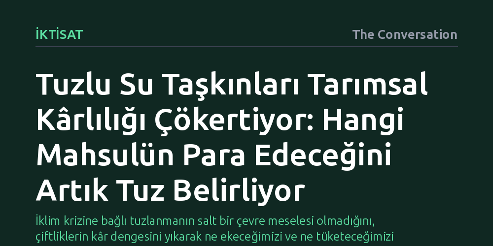

IKTISAT · The Conversation · 2026-09-08
Tuzlu su taşkınları İngiltere'nin en verimli tarım arazilerinde ürün kârlılık dengesini altüst ederek patates ve pancar gibi yüksek getirili mahsulleri zarara sürüklüyor. Artan toprak tuzluluğu, çiftçileri getiri hiyerarşisinin çöktüğü ve yalnızca kışlık buğdayın ayakta kalabildiği dar bir alana sıkıştırıyor.
İklim krizine bağlı tuzlanmanın salt bir çevre meselesi olmadığını, çiftliklerin kâr dengesini yıkarak ne ekeceğimizi ve ne tüketeceğimizi belirleyen yapısal bir iktisadi baskıya dönüştüğünü gösterir.

Tuzlu su ve deniz taşkınları, geleneksel olarak İngiliz tarım arazileriyle yan yana getirilen kavramlar değildir. Ancak ülkenin doğu kıyılarında, özellikle de Birleşik Krallık'ın en verimli tarım kuşaklarından biri kabul edilen Greater Lincolnshire ve Fenlands bölgesinde durum hızla değişiyor. Yükselen deniz seviyeleri ve sıklaşan fırtına taşkınları, ülkenin en nitelikli topraklarına doğrudan deniz tuzu taşıyor.
Bu soruna dair yürütülen bilimsel çalışmaların ezici çoğunluğu meseleye biyolojik veya fiziksel açılardan yaklaşır: Bitkilerin artan tuz konsantrasyonuna hücresel tepkisi, fiziki rekolte kaybı ve toprak kalitesinin bozulması gibi süreçler incelenir. Oysa Greater Lincolnshire odağında gerçekleştirilen yeni araştırma, asıl krizin tarlanın ötesinde, çiftlik muhasebesinde ve işletme ekonomisinde yaşandığını ortaya koyuyor. Tuzluluk sadece bir ekim zorluğu yaratmıyor; hangi ürünün kazanç getireceğini baştan yazıyor ve çoğu durumda kârı tamamen sıfırlıyor.
Araştırmacılar, mahsul dağılım haritalarını, toprak niteliği verilerini ve taşkın risk modellerini çiftlik düzeyindeki finansal bilançolarla birleştirerek kapsamlı bir simülasyon gerçekleştirdi. Ortaya çıkan tablo nettir: Topraktaki tuz oranı yükseldikçe tarlaya ekilen temel ürünlerin tamamı gelir kaybetmektedir.
Fakat maliyet yapısı farklı olan ürünler bu darbeden aynı ölçüde etkilenmiyor. En ağır darbeyi patates alıyor; çünkü patates yetiştiriciliği yüksek sermaye ve girdi maliyeti gerektirir. Verimde yaşanacak en ufak bir düşüş bile maliyetlerin altında kalarak kârın anında buharlaşmasına yol açıyor. Benzer şekilde pancar ve yağlı tohumlu bitkilerde de sert kâr erimeleri yaşanıyor. Hatta görece dirençli kabul edilen tahıllar dahi bu kayıplardan kaçamıyor.
Buradaki asıl kırılma noktası sadece kârların düşmesi değil; tarımsal getiri hiyerarşisinin temelden bozulmasıdır. Olağan koşullarda çiftçilik kurulu bir dengeye dayanır: Kimi ürünler yüksek riskle birlikte yüksek getiri sunar, kimi ürünler ise daha mütevazı ama güvenli bir gelir sağlar. Topraktaki tuzluluk bu hiyerarşik piramidi tamamen düzleştiriyor; yüksek kârlı ürünler yok olurken tüm mahsuller düşük getirili ve yüksek riskli aynı havuza sıkışıyor.
Tüm mahsullerin kârlılığının çöktüğü bu simülasyonda tek bir ürün istikrarlı biçimde öne çıkıyor: Kışlık buğday. Kışlık buğday da tuzlanmadan ötürü gelir kaybına uğruyor; fakat diğer tüm alternatiflere kıyasla ekonomik ayakta kalma eşiği çok daha yüksek. Bu durum, tuzlanma tehdidi altındaki çiftçilerin kârlılıklarını maksimize etmek yerine iflastan korunmak amacıyla giderek kışlık buğdaya sığınmak zorunda kalacaklarını gösteriyor.
Üstelik tuzlu su felaketi, taşkın suları çekildiğinde sona ermiyor. Toprağa nüfuz eden tuz partikülleri drenajla hemen uzaklaşmıyor; katmanlarda birikerek yıllarca varlığını sürdürüyor ve verimi sinsi biçimde aşağı çekmeye devam ediyor. Bu nedenle Fenlands gibi alçak kıyı havzalarında yaşanan kriz geçici bir hava olayının sonucu değil, tarımsal ekosistemi içeriden çürüten yavaş ve kalıcı bir süreçtir.
Seçeneklerin daralması ise daha geniş bir tarım krizine işaret ediyor. Verimli ovalarda ürün çeşitliliğinin kaybolması, arazilerin yalnızca birkaç tuza dayanıklı mahsule mahkûm olması anlamına gelir. Bu da ulusal gıda güvencesini ve tarımsal tedarik zincirinin şoklara karşı dayanıklılığını doğrudan kırılganlaştırır.
Tarımsal üretimin tamamen durmaması için kısa vadede başvurulan ilk yöntem, mevcut ürün desenini tuza daha toleranslı varyetelere kaydırmaktır. Arpa halihazırda tuza görece dayanıklı bir tahıl olarak öne çıkıyor; buğdayın belirli varyeteleri de tuzlu topraklarda diğerlerine göre daha dirençli sonuçlar veriyor. Risk altındaki bölgelerde çiftçiler şimdiden bu türlere yönelmeye başlamış durumda.
Uzun vadede ise tuzlu ortamda verim kaybetmek bir yana tam anlamıyla serpilebilen bitkiler, yani halofitler gündeme geliyor. Örneğin deniz börülcesi (samphire) gibi tuzlu bataklıklarda yetişen yenilebilir bitkiler İngiltere'de üretilse de, bunlar şu an yalnızca niş ve gurme restoran pazarlarına hitap eden yüksek değerli ürünler konumunda. Bu tür bitkileri ana akım tarımın merkezine yerleştirmek; büyük yatırımlar, tüketici alışkanlıklarının değişmesi ve yepyeni işleme-tedarik zincirlerinin kurulmasını zorunlu kılıyor.
Araştırmanın ortaya koyduğu nihai gerçek, toprak tuzlanmasının tali bir çevre sorunu değil, çiftçinin ne ekeceğinden arazinin nasıl tahsis edileceğine kadar her kararı etkileyen yapısal bir iktisadi baskı olduğudur. Henüz İngiliz tarımının bütünüyle tuza bağışık mahsullere geçiş yapacağı noktada değiliz; ancak tuzun getirdiği ekonomik baskı, tarımsal dönüşümü kaçınılmaz kılacak güçte ilerliyor.